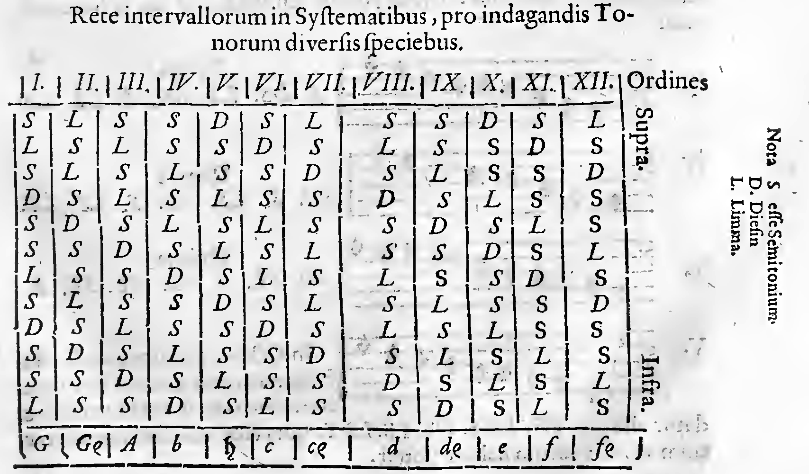

Caput XIV — De Modis Melodiarum, Quas Tonos Vocant¶
CAPUT XIV.
De Modis Melodiarum, quas Tonos vocant.
De modis dicturus primùm hodiernos admoneo Musicos, quos illi Modos appellare solent, sc: proportionem tactus duplam, triplam & similes, (quales Modos fortè fecerunt olim tibijs, in comoedijs Romanorum) de ijs mihi praeterquàm quod jam est dictum, sermonem non fore. Modos ego dico, quos ipsi cum veteribus solent appellare Tonos, cùm quaeritur, cujus Toni sit Cantus. Sunt enim certae Cantus concinni seu qualitates seu species, duabus summis Generum differentijs, Duri & Mollis, contra se dirempti.
Graeci Τρόπους & ἤθη dixêre, illud à forma Systematis, hoc ab Effectu Cantus in homine, quia plerique legislatorum censuerunt, Modos cantuum facere ad Mores conformandos.
De horum igitur Tonorum numero & discriminibus non hodie tantùm magnae sunt inter Musicos controversiae, sed & jam olim fuerunt: quarum aliquas apud Ptolemaeum, plerasque apud Vincentium Galilaeum, videre est. Mihi verò nec examinare quorumcunque sententias est propositum, neque refutare: itaque non expectet Musicus à me quicquam aliud in hac quaestione, quàm id unicum, ad quod mea me ducunt principia hactenus explicata. Etsi enim Toni ab eo dicti videntur, quòd Modus unus altero vel altiùs vel profundiùs incipiat unius Toni (vel Semitonij) intervallo; Tonos tamen Ego non ipsâ per se Cantus altitudine vel gravitate discrimino, quod solum observasse quosdam Vincentius Galilaeus testatur: sed numerum eorum ad numerum specierum unius Diapason cum Ptolemaeo exigo; dicoque totidem esse Tonos, quot possunt esse sceleta Systematis Octavae legitima & Concinna, Generibus, Ordine concinnorum intervallorum, & situ Tetrachordorum, seu electione Medietatum binarum Harmonicarum inter se differentia. Tres nimirum sunt res, quae Tonos variant, interque sese distinguunt: Genus, Sequela Concinnorum, & Articulatio sceleti ex Consonantijs minoribus.
Primùm Genera duo, Cap. VI. constituta divisionis Systematis Octavae, constituunt nobis duos principes & Naturâ primos Tonos, cum ipso sc: Systemate unius solius Octavae ortos. Deinde in utroque genere Systematis tam duro quàm molli, ex compositione duorum Diapason in unum majus & perfectum Systema, quam tradidimus Capite XI. dantur Systemata singularum Octavarum, differentia radicibus seu metis, quibus includuntur, sunt autem illae metae Loca Systematis naturalis
f. 0157 · p. 67diversa, seu hodierno vocabulo Claves aliae atque aliae, quas consequitur necessariò diversa altitudo, respectu systematis naturalis, quod à G incipit; & per illam diversus etiam situs semitonij, quod est vel tertio vel penimo vel imo loco Octavae. Nam quod attinet altitudinem ipsam, absolutè consideratam, illa per se nihil mutat speciem cantus, cùm eadem species vel altè possit intonari vel humiliter. Neque astringimur ad hoc, ut Tonorum reliquorum dimidiam partem sumamus cum Ptolemaeo profundiorem Systemate G principali & Naturali, dimidiam altiorem. Possumus enim vel omnes altiores, vel omnes humiliores sumere, cùm idem utrinque sequatur Ordo Concinnorum, tunc nimirum, si Systema duplicis octavae naturaliter compositum, incipiat à clavi G. At si partem humiliores, partem altiores faciamus cum Ptolemaeo; Systema naturale sic erit componendum, ut infrà Diapente addamus, suprà Diatessaron; & sic Systema compositum duplicis Octavae incipiet à C.
Tertiò denique datur in Systematibus sic constitutis, electio duarum Medietatum Harmonicarum, in quas colliment τονὴ & πεττεία, partes cantus; seu quod eodem redit, datur situs Tetrachordi vel summo vel imo loco Octavae, vel in medio duarum Tertiarum.
Hujus igitur diversitatis causâ, subjungendum hic ante omnia ex Capite XI. concinnatum Rete quadratum ex duodecim Ordinibus intervallorum duodecim minimorum Naturalium: non quidem ideò, ut cum Aristoxeno secundùm numerum illorum totidem Tonos faciamus, incipientes unumquemque uno tali minimo intervallo altiùs: sed ut his minimis in usualia concinna contractis, appareat, utrùm nova aliqua species Octavae ab unoquolibet minimorum incipere possit.
Rete intervallorum in Systematibus, pro indagandis Tonorum diversis speciebus. (Nota S esse Semitonium, D. Diesin, L. Limma.)


Vides, ex duodecim discriminibus altitudinum Octavae nullam esse quae cum altera conveniat in elementorum ordine.
Videamus nunc, quot hinc existant species Systematum Octavae si prima differentia Octavarum, quae est Generis, admisceatur; hoc est, an omnium Ordinum 12. minima 12. intervalla possint concinnè contrahi in septem unius Octavae usualia intervalla, distincta locis octonis, & quot modis quilibet.
Ubi nota quod LS. vel SL. sit nota Toni Majoris, DS, vel SD. Nota toni Minoris, S. nota semitonij: & procedent nostrae descriptiones à Gravi ad Acutum, seu ab infrà ad superiora.
Certum est igitur, in Octava G. duas existere species pro duplici situ semitonij in altero vel tertio loco ab imo.
Prima Mollis Generis: LS. S. DS. LS. S. SD. LS. vel SD. S. LS.
Altera, Duri Generis: LS. SD. S. LS. SD. SL. S. vel S. LS.
At in Ge. ut & in Ce. cum duo semitonia non componant unum concinnum, nec deinceps canantur ἐμμελῶς; imum ergò semitonium stat solum; per leges 9. & 2. prioris Capitis. Esset ergo distributio
Vel talis S. SD. SL. S. SD. SL. SL. inconcinna ex lege 3.
Vel in Ge. quidem talis S. SD. SL. SS. DS. &c. & haec inconcinna ex lege 9. Nulla igitur species Octavae concinna ex Ge. incipit.
In octava A. pro triplici situ inferioris semitonij possibili, tribus etiam modis contrahentur elementa in Tonos:
vel enim sic S. DS. LS. S. DS. &c. quod coincidit cum eo quod jam est rejectum; vel sic, ut hinc nascatur
Tertia:
S. DS. LS. SD. S. LS. LS.Quarta:
SD. S. LS. SD. S. LS. LS.Quinta:
SD. SL. S. SD. SL. SL. S.
In Octava b. unica potest esse Elementorum contractio, quae coincidit cum quinta formâ, nec datur alia, sc:
DS. LS. S. DS. LS. LS. S.quia semitonium non nisi tertium ab infra locum habere potest.
In Octava h quia non licet conflare duo semitonia loco secundo, per legem 9. nec deinceps ordinare, per 2. distribuenda igitur sunt in tonos sic, ut solitarium stet vel primo, vel secundo loco.
Quod si primo loco: sequetur, ut alterum solitarium stet vel quarto loco, quod rejicitur lege tertia, vel sexto, & quatuor toni inferiori loco octavae deinceps sequentur contra legem quartam. Quare semitonium ordinandum est loco secundo, ut hinc existat species
Sexta:
SL. S. SD. SL. SL. S. SD.
In Octava C. pro duplici situ possibili semitonij dantur duae distributiones: prima coincidit cum 6.
LS. S. DS. LS. LS. S. DS.altera est numero SeptimaLS. SD. S. LS. LS. SD. S.
De octavae ce formâ unâ dictum est paulò anteà, altera coincidit cum sequenti.
S. SD. SL. SL. S. SD. SL.
In Octava d. pro triplici situ semitonij in imo Tetrachordo, dantur tres species, Octava S. DS. LS. LS. S. DS. LS.
Nona:
SD. S. LS. LS. SD. S. LS.Decima:
SD. SL. S. LS. SD. SL. S.
In Octava de nulla concinna distributio fieri potest: exularet enim primis tribus locis semitonium, quod est contra legem octavam prioris C.
In Octava e. rursum triplex situs semitonij possibilis in tribus imis locis, tres dat species, quarum
Undecima:
S. LS. LS. SD. S. LS. SD.Duodecima:
SL. S. LS. SD. SL. S. SD.Tredecima:
SL. SL. S. SD. SL. S. SD.est eadem, cum sequentis formâ priori.
In Octava f. semitonium habet unicum situm loco tertio, quare una existit species, sc: eadem tredecima biformis LS. LS. S. DS. LS. S. DS. vel SD. S.
Denique in Octava fe duo sunt loca semitonio, vel in penultimâ sede, vel in ultimâ. Quod si igitur sic ordines SL. S. SD. SL. S. SD. SL. species erit prima, ut apparet ex collatione: sin aliter, erit quarta decima S. LS. SD. SL. S. SD. SL.
Apparet igitur causa cur in Ordine II. IV. V. VII. IX. sc: in Octavis Ge. b. h. ce. de. nulla peculiaris species incipiat.
Apparet secundò, nullam posse fieri genuinam transpositionem, ut maneat eadem species Octavae, nisi has, I. ab fe. in g. II. à ge. in a, sed formae rejectae. III. ab a, in b, IV. à h. in c. V. à ce, in d. VI. à d. in de. formae rejectae. VII. ab e. in f.
At si vulgò Musicorum Organicorum obtemperemus, qui Comma negligunt, nec inter Tonos, majorem minoremque discernunt; tunc omnes quatuordecim nostrae species Octavarum, constituent non plures, quàm tres Modos, pro triplici situ semitonij (ut quidem & Galilaeus tempus fuisse ait, cùm non plures tribus haberentur Toni, Dorius, Phrygius, Lydius) multiplicantur verò in plures per solam altitudinem.
Nam quod tertiam causam attinet, articulationem sceletôn Octavae, ea nobis cum illis adhuc communis est; propter quam etiam nobis plures quam XIV. species nascuntur.
Ecce tres ordines vulgares Octavarum.
Ut semitonium sit loco imo, quem puto à veteribus dictum Phrygium, aequipollent illis ex nostris speciebus hae.
In Octava A. |
S. DS. LS. SD. S. LS. LS.(Aequipollentia quoad imum Tetrachordum, est vera.)
In Octava ce. |
S. SD. SL. SL. S. SD. SL.
In Octava d. |
S. DS. LS. LS. S. DS. LS.In Octava e. |
S. LS. LS. SD. S. LS. SD.(Mediocris aequipollentia.)
In Octava fe. |
S. LS. SD. SL. S. SD. SL.
Ut semitonium sit loco penimo, quod videtur in Dorio, veteribus dicto, factum esse, aequipollent vulgò ex speciebus nostris hae.
In Octava G. |
LS. S. DS. LS. SD. S. LS.velS. DS. LS.
In Octava fe. |
SL. S. SD. SL. S. SD. SL.In Octava c |
LS. S. DS. LS. LS. S. DS.
In Octava h |
SL. S. SD. SL. SL. S. SD.velS. LS. SD.(Aequipollentia quoad imum systema diapente est vera.)In Octava e. |
SL. S. LS. SD. SL. S. SD.velS. LS. SD.(Hic aequipollentia minima.)
In Octava A. |
SD. S. LS. SD. SL. S. LS.velS. LS. LS.
IX. In Octava d. |
SD. S. LS. LS. SD. S. LS.velS. DS. LS.(Aequipollentia mediocris cum superioribus.)
Ut semitonium sit loco tertio, ut in Lydio fuisse credo, aequipollent vulgò ex speciebus nostris hae.
In Octava G. |
LS. SD. S. LS. SD. SL. S.velS. LS.
VII. In Octava c. |
LS. SD. S. LS. LS. SD. S.velS. DS.(Aequipollentia in imo diapente vera.)In Octava A. |
SD. SL. S. SD. SL. SL. S.velS. LS.
In Octava d. |
SD. SL. S. LS. SD. SL. S.velS. LS.(Aequipollentia minor.)
In Octava e. |
SL. SL. S. SD. SL. S. SD.
In Octava f. |
LS. LS. S. DS. LS. S. DS.velSD. S.(Aequipollentia minima.)
Possunt ergò secundùm vulgi de Tono majori & minori sententiam, plurimae fieri transpositiones Melodiarum de literis in literas, mediantibus signis ♭ & ♯.
Restat ut examinemus quenam ex nostris XIV. speciebus Octavae per articulationem elementorum concinnorum possint fieri multiplices. Nam specierum discrimen quintuplex oritur à contiguitate Tonorum; aut enim tres toni se invicem sequuntur deinceps, aut bini tantùm. Quod si tres, oportet ut vel in medio octavae stent non naturaliter, utrinque habentes singulos tonos & singula semitonia: vel ut ad alterum Systematis extremum vergant, & tunc necessariò in illo extremó est semitonium, propter leges 8. & 3. Sin autem bini tantùm Toni se insequuntur, intercedentibus semitonijs, tunc semitonio locus in extremitatibus non est; & duae tonorum bigae vel suprà stant, vel infrà, tertia mollis in extremo contrario, eaque inferiùs recta, habens semitonium suprà; superiùs inversa, Semitonium infrà habens.
[Exempla musica quinque articulationum: (1) Tertia minor, Tres Toni, Tertia minor; (2) Semitonium, Tres Toni, Semitonium, Tertia major; (3) Semitonium, Tres Toni, Semitonium, Tertia major; (4) Duo Toni, Semitonium, Duo Toni, Tertia minor; (5) Tertia minor, Duo Toni, Semitonium, Tertia major.]
f. 0162 · p. 72Hoc pacto in nostris XIV. speciebus reperiuntur interspersae aliae X. quaternis primis locis coincidentes cum prioribus, aut etiam quinis; ubi verò incipiunt differre, praemissa est particula, vel,
Quod si jam accesserit ultima causa, discriminans Tonos, scilicet τονὴ & πεττεία: triplicabitur Numerus, & fient 72. species. Omne enim sceleton Octavae ex omnibus 24, habet & tertiam & quartam concordantem cum primâ, & quintam & sextam. Si ergò hae partes cantus potissimùm circa quartam & sextam occupentur, tunc statuunt in imo loco Diatessaron: Sin circa tertiam & sextam, Diatessaron est in medio, sin denique circa tertiam & quintam, Diatessaron est loco supremo.
Haec autem non ideò dico, quod necessaria sit tam minuta concisio, cùm sciam, plerumque misceri ternas formas in uno cantu: sed ut ex hoc numero possit judicium ferri de discriminibus Tonorum, quae Moderni tradunt; quae partim talia sunt, ut mihi videantur illorum tot statui posse, quot sunt omninò cantiones, caetera unius Toni. At si observamus haec principia, numerus Tonorum utcunque magnus, finitus tamen est. In summâ, Toni realibus distincti metis & discriminibus, non respectu altitudinis vocis in Organo, sed in ipsâ etiam humana voce, quae principium naturalis Systematis à quacunque voce altâ vel profundâ facere potest, sunt vel 3. tantùm, vel 14, vel 24, vel 72.
Cum his principijs meis sic ego concilio Tonos octo vulgares quos Ecclesiasticos dicunt; erantque veteribus, opinione quorundam,
I. Dorius (Adam primus Homo.) | I. Hypodorius (Noe secundus.)
Hae sunt duae species Cantus mollis, ex specie octavae, quae est mihi Prima inter XIV. Nec video aliam differentiam, quàm in altitudine merâ, quam primus habet majorem, secundus minorem: nisi velis illos per causam ultimam distinguere, quòd primus quidem observet hoc sceleton, secundus hoc.
Tertius vulgaris Phrygius (Tertius Abraham.) | Quartus vulgaris Hypophrygius (Quatuor Evangelista.)
f. 0163 · p. 73Nihil manifestius quàm hos duos Generis duri pertinere ad nostram speciem XI. & scribendos ex e, estque rursum vix ullum discrimen aliud quàm altitudinis, nisi haec illis velis accomodare sceleta seorsim.
Quintus vulgaris Lydius (Quinque libri Mosis) | Sextus vulgaris Hypolydius (Sex hydriae positae)
[Nota marginalis ad “altitudinis”:] Triplex est altitudo Toni: 1. absoluta & materialis quodammodo, ut in voce humana etiamque in Organis si ex G ascendat radix Systematis in g. ubi non mutatur forma Systematis: de hac jam nihil. 2. Formalis ipsius radicis cujusque Toni in Systemate naturali composito ex diapason. Neque haec hoc loco intelligitur: importat enim mutationem Toni permutatâ Clavi radicali Systematis.
3. Iterum formalis, altitudo Melodiae respectu suae radicalis clavis, quâ manente manet quidem Tonus idem, sed aliud quasi schema induit: ut si non ad Octavam radicis ascendat, sed infra sextam, quintam aut quartam se contineat, vel infra radicem sese crebro demittat, rediens tamen in fine ad radicem. Itaque sceleta ista non sic sunt intelligenda, quasi Melodia omnes ejus articulos vel notas hic pictas pervadat: sufficit si aliquas, aut si earum diapason inferiores. Hos igitur sese sic demittentes infra radicem possemus cum antiquis appellare Plagios: caeteros Authentas.
Et hi similiter manifestissimè scribendi sunt ex f. suntque generis mollis, distinguunturque altitudine vel sceletis hisce, ex nostrâ XIII.
Septimus vulgaris Mixolydius (Septem artes liberales) | Octavus vulgaris Hypomixolydius (Et octo sunt partes.)
Etsi apparet consilium inventorum, quòd Primum & Secundum ex d. scribere voluerint, Tertium & Quartum ex e. Quintum & Sextum ex f. Septimum & Octavum ex G. certum tamen est ex ijs quae supra disputavimus, etiam hos generis Duri cum Primo & Secundo ex eadem clavi G. scribi debere, quibus ex nostrâ specie II. competunt haec sceleta.
Hac igitur applicatione vulgarium octo Tonorum ad meas species Octavae I. XI. XIII. II. ego multò evidentius discrimen ostendere possum inter hos Tonos, quàm Musici nostri, quia comma contemnunt. Qui enim ex G. scribuntur, omnes quatuor habent consonantias legitimas, tertiae, quartae, quintae, & sextae cum primâ. Qui verò ex F. & e. consonantijs utuntur adulterinis, infrà quartâ majori e a. & f bb. & quintâ majori e hh. & f cc.
Quid igitur cum reliquis decem speciebus, inquies? cùm omnes usitati Toni redigantur ad quatuor? Nimirum ad hoc serviunt, ut sciant Musici, si Systemata principalis Octavae ex G descriptae, temperemus ut natura suadet; tunc nequaquàm ita facilè & variè transponi posse cantum sine mutatione sinceritatis suae, ut ipsi habent in usu. Liberum igitur illis est, vel rejicere omnes residuas 10., & cum ijs etiam transpositiones suas: vel fateri, quòd plures Formae Melodiarum, plures nempe Modi vel Toni possint existere, ijque differentes ab his positis, alij
f. 0164 · p. 74magis alij minus; pro ut aequipollentias ad marginem supra vides annotatas. Nam si superiorum unius Octavae intervallorum rationem habemus nullam; dantur sanè transpositiones aliquot à G. in c. & ab A. in d. & aliae.
Quaeras ultimò, quid impediat illas transpositiones, toties jam à me rejectas? Videntur enim aures illas non impedire, cùm in confesso sit, Commatis excessum in intervallis, quae disjuncta sunt locis Systematis, ab auribus non dijudicari. Esto enim systema quàm optimè tensum, ad naturae leges hactenus explicatas, pulsentur G a. & a h. rogenturque omnes homines, quotquot audiunt, utrum intervallorum horum sit majus, nescire se dicent; nec prius discernent, quàm conjuncta fuerint intervalla loco eodem Octavae; hoc est, ubi spacio chordae per circinum dispuncto, pars octogesima prima chordae intersepiatur, & sic duae longitudines 80. & 81. pulsatae momentis proximis, inter se fuerint comparatae?
Respondeo, etsi auditus non distinguit, pulsatis tribus solis chordis Octavae (duorum intervallorum terminis) at pulsatis omnibus unius Octavae chordis, sic tandem distinguit Octavam G. primogenitam & naturalem, ab Octavis aliarum clavium. Insunt enim in omnibus Octavae speciebus, eadem intervalla Concinna septem; quae semel expressa pulsatione chordarum, statim haerent in memoria de propinquo; ut facilè pateat auditui, quo loco Octavae naturalis quilibet Tonus incipiat. Hoc pacto Commatis sensus erit implicitus in distinctione Octavarum. Quemadmodum enim Auditus Consonantias ipsas, & Concinna omnia intervalla, probat ab effectu, licet non numeret longitudines chordarum, quae causam praebent concordantiarum: sic idem auditus advertit etiam affectum commatis 80. 81. etsi id non numeret, adeòque nec actuali discreta sensione capiat seorsim.